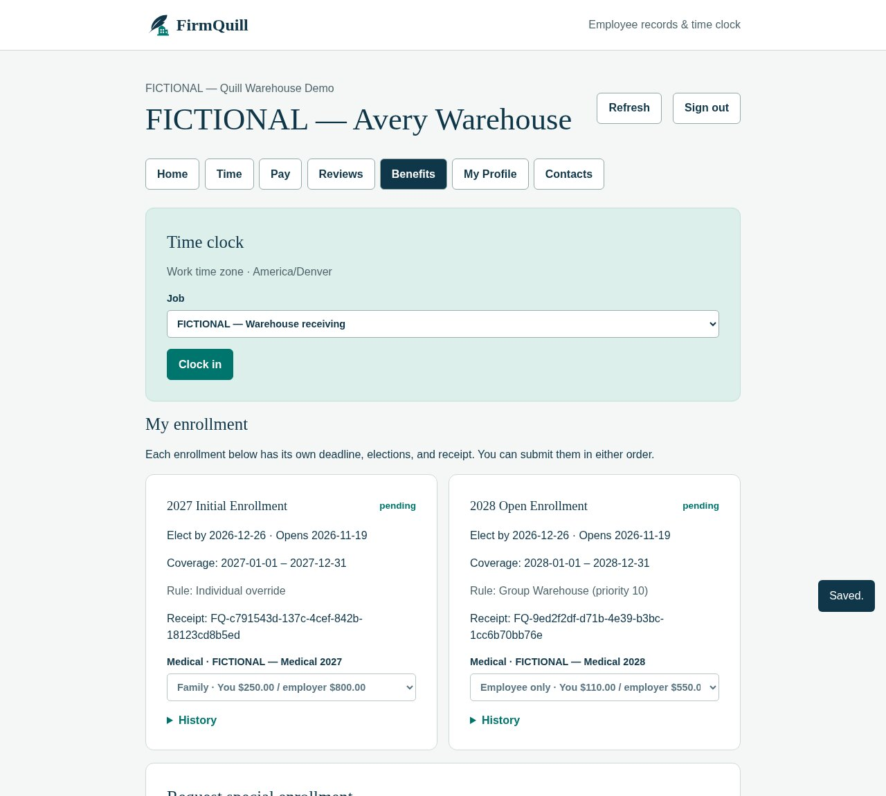
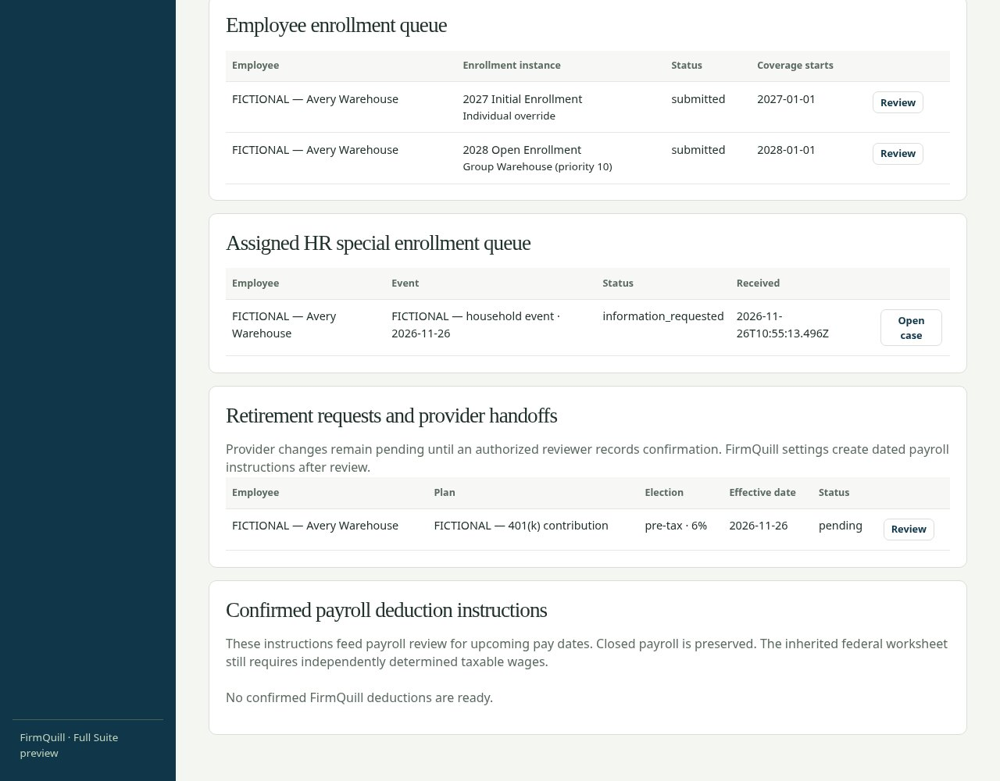
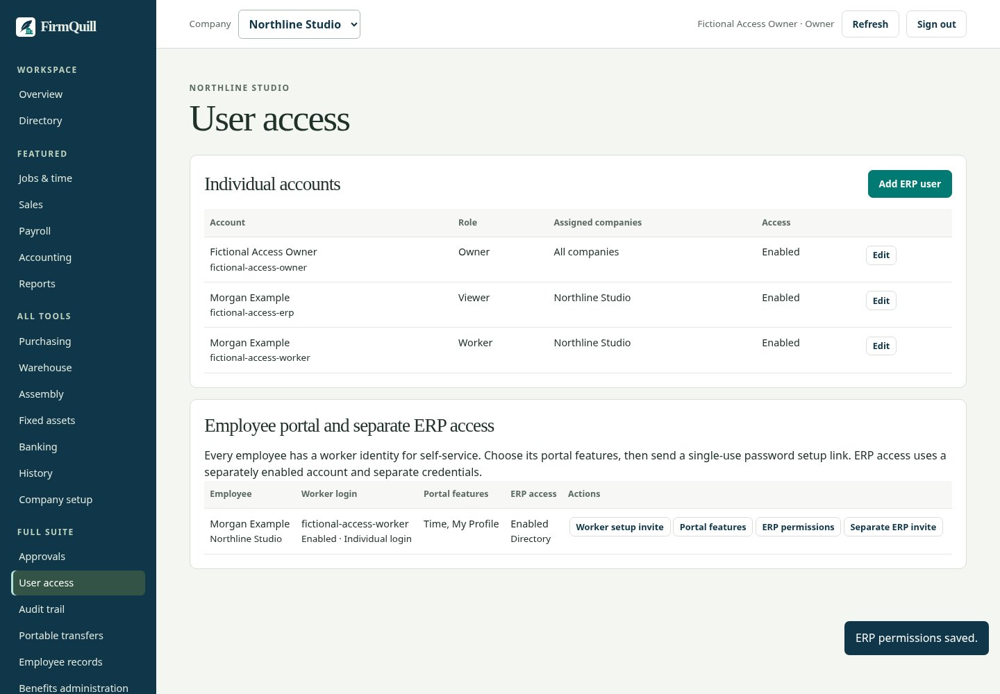
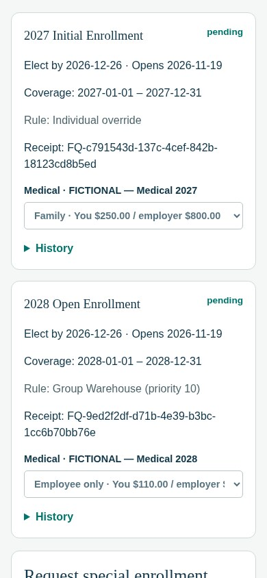
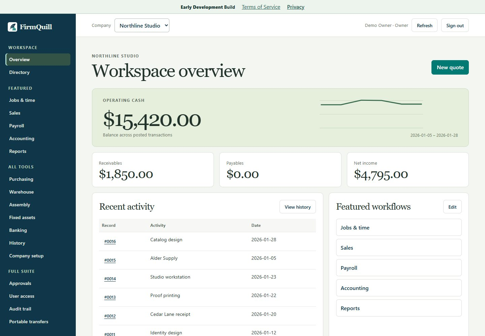
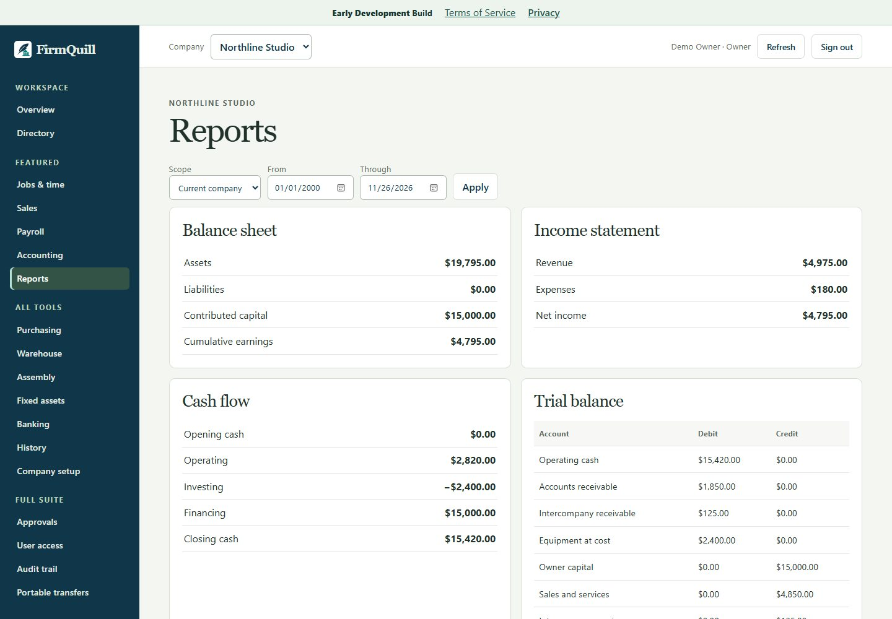
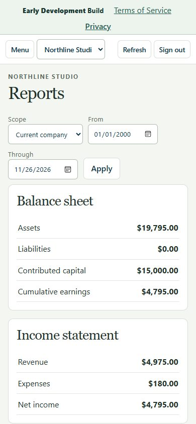
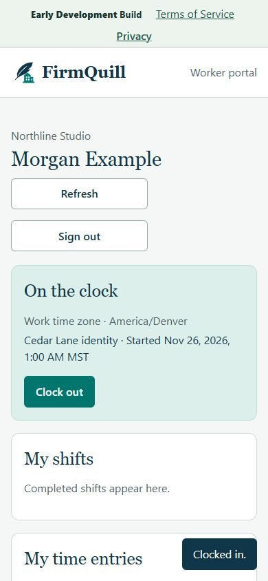

Corporate operations · Teams · Early Development
FirmQuill Full Suite
FirmQuill Full Suite is a self-hosted corporate operations suite for teams. Finance, managers and employees work in the same system with role-based access. The current preview connects accounting, sales, inventory and job costing with manager approvals, time tracking and employee self-service.

Try it with sample data
Harborline Transport Group demo
Explore a fictional parent company and four subsidiaries: distribution-center freight, last-mile parcel delivery, workforce shuttles and fleet maintenance. The sample spans January 2020 through November 2026 and includes 85 active and former employees. Trace 3,228 individual records: 831 freight shipments, 997 delivery routes, 831 shuttle runs and 569 maintenance work orders, including contract work and one-off repairs.
The ZIP comes with Full Suite, the sample database, a Windows launcher and a walkthrough. To try it on Windows, install Node.js 24, extract the entire ZIP and run Start Harborline Demo.cmd. Open START-HERE.md for the demo logins and walkthrough. The normal Full Suite download does not preload these books. Each demo account accepts the Terms of Service before seeing its records.
To import instead, run Create Harborline Import Files.cmd from a clean extraction before opening the demo. It creates a books-only import for an empty FirmQuill workspace and a complete Full Suite recovery file.
Planned team workflows
On the roadmap: dashboards tailored to departments such as finance, HR and legal; shared projects assigned to teams or individuals without automatically granting access; and pallet-level asset tracking with a separate audit portal. These are not part of the current preview.
Feature screenshots
Captured from the working app with fictional records. The first four images show the 0.2.0 employee and benefits upgrade. Phone images are browser previews at iPhone width, not physical-device tests. Select an image to view it at full size.
















Employee self-service
- One place for everyday tasks
- Employees can clock in and out, check their time, find their manager and HR or Payroll contacts, and view the portal sections their employer enables.
- Pay and performance
- Payroll can publish finalized PDF paystubs for employees to save or print. Employees can read published performance reviews and acknowledge receipt. Unpublished drafts stay private.
- Employee records
- Track job and supervisor history, department, education, certifications and project assignments. Employees can edit or request changes to fields their employer allows.
Benefits and retirement
- New-hire and annual enrollment
- Set initial enrollment windows from the hire date using company defaults, group rules or an individual override. Schedule open enrollment by group and plan year. An employee can elect this year’s new-hire coverage and next year’s annual coverage at the same time, with separate receipts.
- Special enrollment
- Employees submit a life-event request and track its status. The request goes to the assigned HR queue for a decision. FirmQuill does not determine eligibility or update insurance carriers automatically.
- 401(k) and employer plans
- Employees can request contribution changes and check what is pending or effective. Payroll can review confirmed deduction instructions or export a handoff for a provider. The app does not move funds or change investments.
Identity and access
- Optional directory integration
- Configure on-premises Active Directory imports, OpenID Connect sign-in or SCIM account provisioning. Local worker setup and timekeeping do not require an external identity provider.
- Separate office and employee access
- Employers choose which worker portal sections an employee can use. HR, Payroll and assigned managers get different permissions in the ERP portal. A worker account does not grant ERP access. The owner can display the assigned company’s name and logo in the worker portal or use the parent company’s branding.
Data guide
Data & backups
- Where records live
- Both portals share a SQLite database on the company’s host. By default, books.sqlite lives in a FirmQuill-data folder beside the application folder. Books, user assignments, approvals and punches persist across restarts. The database and its working files can contain readable records. Their protection depends on the host’s disk encryption and file permissions.
- Make a backup
- An operator can create an encrypted .fqdb database backup, including accounts, pending approvals, original punches, corrections, employee records and audit history. The owner can separately export an encrypted .firmquill snapshot of portable books and approved time.
- Restore your records
- The recovery utility validates an .fqdb backup and restores it to a new database path. Point the host at that database to recover the installation. Portable .firmquill files can be restored in Lite or imported into an empty Full Suite workspace.
About this preview The download contains the runnable source for the Employee Records and Self-Service 0.2.0 preview. Use fictional records for evaluation. Payroll staff can publish finalized paystubs created elsewhere. The preview does not run production payroll, generate direct deposits or submit filings.
Two portals, one host
- Local launch
- Extract the ZIP and start the Windows launcher with the documented Node.js runtime. Create the first owner account, then create a company or import an existing Lite vault. The host must stay running for either portal to be available.
- Individual accounts
- Employee profiles get a worker account with no preset password. Owners send a single-use setup link and choose which portal sections to enable. ERP access is separate and limited by company, role and approved areas.
Worker time and corrections
- Clock in and out
- A worker linked to a company employee selects a job and clocks in. Clock-out submits the shift for review. The host records the time zone and divides shifts crossing midnight into local work dates.
- Personal timesheets
- Workers can inspect their own punches and status, propose a corrected interval and explain the change. Managers see the original times and the proposal together.
- Approved job time
- An approved shift feeds job costs and federal worksheet estimates. An approved correction updates the effective minutes and keeps the earlier times in the record.
Approvals and accountability
- Financial review
- Bookkeepers can enter contacts, jobs, time, quotes, orders and attachments directly. Controlled postings enter a review queue. Managers or the owner approve or reject requests, and the app checks current balances, stock and closed periods before posting.
- Shared editing
- Refresh a portal to see colleagues’ changes. The host detects stale edits and recognizes repeated requests to keep a repeated submission from posting twice.
- Audit history
- Owners and assigned managers can see who took an action and which company it affected. The audit screen shows the latest 500 visible events, and older events remain in the database.
Edition transfers
- Preview a Lite import
- An owner can inspect company totals, records and attachments before committing a whole encrypted Lite backup to an empty Full Suite workspace.
- Return books to Lite
- Export a password-protected snapshot with all company books, groups, source links, attachments and approved time. Accounts, raw punches, outstanding approvals and Full Suite employee records such as paystubs, reviews and benefits stay with the Full Suite installation.
Company books
- Company setup
- Keep each business’s contacts, stock, balances and document numbers together. Choose activities such as selling products or billing for time, then pick the workflows featured on its overview.
- Cash overview
- See operating cash by posting date alongside amounts customers owe, unpaid vendor bills and net income. Open a recent activity to inspect the record behind it.
- Contacts and catalog
- Create reusable customer and vendor records, then add products or services to use on sales and purchasing documents.
Sales and purchasing
- From quote to collection
- Carry a single product or service line from quote to sales order, fulfillment and invoice. Record a full or partial payment and see the remaining balance by customer.
- From purchase order to payment
- Receive an order, enter the vendor bill and record payments against it. Open payables show which bills still need attention.
- Returns and credits
- Reverse a whole sale or purchase with a linked credit. Product returns adjust stock, and a settled amount can be recorded as a cash refund.
- Document history and attachments
- Open a record number to follow the originating transaction and its accounting entries. Print a sales or purchase document, attach a supporting file of up to 1 MB or download it again.
Stock, assembly and equipment
- Warehouse inventory
- Check quantity and moving-average carrying value for an item at each location. Transfer stock, record adjustments and trace each movement back to the event that caused it.
- Assembly
- Choose the components and quantities for a build. The app removes the components from stock and assigns their combined value to the finished goods.
- Fixed assets
- Record an equipment purchase with its useful life and residual value. Post monthly straight-line depreciation and follow the remaining book value in the asset register.
Jobs, time and payroll worksheets
- Job costing
- Link billed work and direct expenses to a job. Compare its revenue with posted costs and estimated approved labor to see the margin.
- Employees and time
- Record each employee’s hourly rate and work jurisdiction. Log minutes against a job, review the entry and approve it to include a straight-time labor estimate.
- Federal payroll preview
- Explore a 2026 worksheet using a pay date, wage bases, prior wages and W-4 elections. See estimated federal withholding, employee and employer Social Security and Medicare, and applicable Additional Medicare. The worksheet does not generate finalized paystubs. Staff can publish an existing finalized PDF in the employee portal; production payroll, direct deposit files and filings are not included.
Accounting and banking
- Chart of accounts and journals
- Inspect the company’s account balances and the debit and credit entries behind them. Post balanced manual entries to eligible accounts and link a reversal to the original entry.
- Period close
- Set a closing date when a period is finished. The app blocks further posting through that date, so check outstanding entries before closing.
- Bank CSV import and export
- Exchange a single USD checking statement in the three-column layouts used by Wave US and QuickBooks Online US. Preview deposits, withdrawals, totals and repeat rows before confirming. These are file exchanges with no live bank or vendor connection.
- Statement reconciliation
- Match statement movements to cash journal entries one at a time by exact amount. Compare opening and closing balances and carry the reconciled close into the next statement.
Statements and reporting groups
- Four financial statements
- Choose a reporting period and read the balance sheet, income statement, cash flow and trial balance from dated postings.
- Group reporting
- Compare cash, assets and income across selected companies. Record paired intercompany service charges and inspect the group-only entries that eliminate qualifying unpaid charges from consolidated totals.